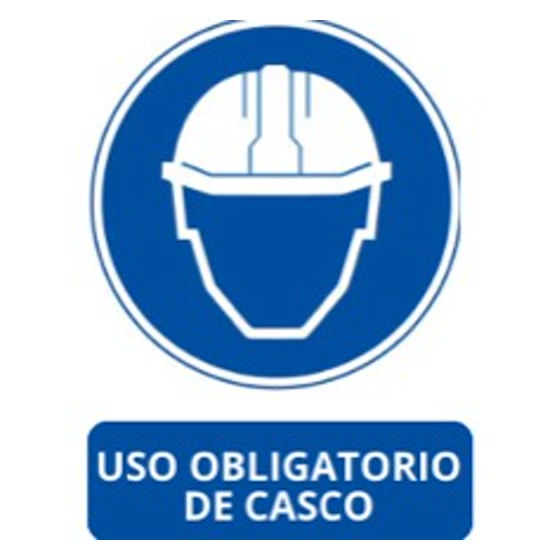
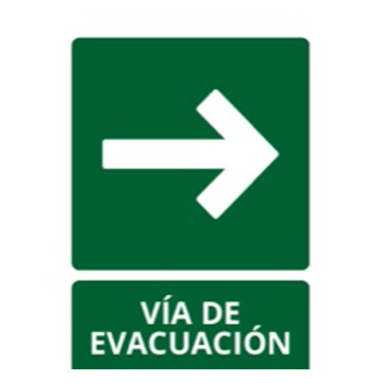
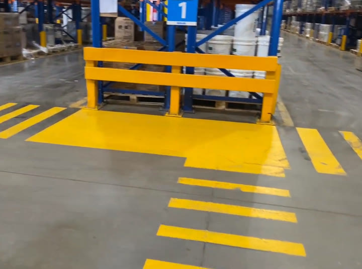

IA aplicada a la seguridad:
pasa de lo correctivo a lo predictivo.
Bastián Osorio · Neisstech
Al día siguiente.
Santiago · 07:55
Un día cualquiera.
Sala de reunión · 07:58
Este es Don Salva.
Operador con años de experienciaBrigadista de emergenciaComité paritario
08:00 · Charla de seguridadHoy hay algo
Hoy hay algo
que celebrar.
Días sin accidentes1.000 días
1.000 días
sin accidentes.
08:30Cada uno vuelve
Cada uno vuelve
a su puesto.
Por senderos que
casi no se ven.
Carga de baterías
Este es Alejandro.
Operador de montacargasPoco tiempo en la compañíaNo le interesan las reuniones
Sin cinturón.
A toda velocidad.
Hoy quiere
irse temprano.
La carga no lo deja ver.
Va de espalda.
El cruceUn paso de cebra
Un paso de cebra
que casi no se ve.
Al día siguiente · 08:00La charla ya no
La charla ya no
fue la misma.
Días sin accidentesEl contador volvió
El contador volvió
a cero.

Quién les habla
Bastián Osorio
Gerente comercial y socio de 
NeisstechEspacios de trabajo seguros y eficientes para la logística, en Chile y Sudamérica.
HoyCómo pasar de una seguridad que reacciona a una que se anticipa.
154
personas murieron trabajando
en Chile en 2024.
49 %
en un accidente con
un vehículo involucrado.
15
de ellas, dentro de la faena:
no en la calle.
Qué cuesta un accidente.
Lo que se veUna persona herida · la atención · el daño al equipo
23,9 días
- Fuera, por cada accidente en transporte (promedio país: 18,5 · SUSESO 2024)
- Reemplazos y horas extra
- Detenciones y reorganización de la operación
- Investigación del accidente
Cuatro grandes desafíos.
01Personas y equipos móvilesComparten el mismo espacio, al mismo tiempo.
02Cobertura e inmediatezDetectar y actuar en todas las zonas y turnos.
03EstandarizaciónNormas, señalización y prácticas que cambian de un lugar a otro.
04Rotación y culturaEntrenar a quien llega antes de que se vaya.
Marco normativo
El marco de la prevención.
DS 594Condiciones básicas del lugar de trabajo
DS 44Gestión preventiva de los riesgos
ISO 45001Sistema de gestión y jerarquía de controles
BSI PAS 13Separar personas y vehículos guía internacional
Tres capas complementarias.
Pilar 1 · Gestión visual.
Gestión visual
Que el estándar se vea.
Ordenar los espacios y orientar a las personas, sin tener que preguntar.
- Demarcaciónvías, senderos, cruces y zonas
- Señalizaciónadvertencia, obligación, prohibición y evacuación
- Estándares visualesun mismo diseño en toda la planta






Gestión visual
En el piso, de verdad.
Pilar 2 · Gestión de tráfico.
Gestión de tráfico
Cada uno en su espacio.
- Segregación
- Barreras
- Recorridos
- Cruces
- Accesos
- Dispositivos de control
Gestión de tráfico
Que cada cruce avise.
Pilar 3 · Lúmina.
La ingeniería interviene el riesgo; la analítica nos ayuda a comprobar cómo funciona y dónde mejorarla.
Qué aporta.
1De las cámaras, informaciónEventos que ayudan a mejorar la prevención.
2Del riesgo, una respuestaAlertas o dispositivos que se activan según el riesgo, mediante integraciones validadas.
Video del caso PucargoPor incorporar · recursos/clips/pucargo.mp4
Lúmina en acción
Caso Pucargo.
Qué hay detrás.
Se instala lo necesario y se aprovecha lo que ya existe, según compatibilidad.
Analítica de LúminaDe los eventos
Ilustración · no son datos reales
De los eventos
a las decisiones.
Uso responsable de cámaras e IA.
Finalidad preventivaLas cámaras están para cuidar a las personas, no para vigilarlas.
PrivacidadLa persona no es el foco: el foco es el riesgo.
Protección de datosDatos tratados conforme a la ley de protección de datos personales.
La misma mañana · 08:46Volvamos
Volvamos
a la historia.
Pilar 1 · Gestión visualToda la planta
Toda la planta
se entiende.
Pilar 2 · Gestión de tráficoCada cruce se cierra
Cada cruce se cierra
cuando viene una grúa.
Pilar 3 · LúminaVe el riesgo y
Ve el riesgo y
activa la respuesta.
Neisstech + Lúmina · en funciónTodo el arsenal,
Todo el arsenal,
trabajando.
- SmartDock el camión no se mueve
- Safetygate la carga alta no pasa
- X-KUBE el cruce avisa solo
- Lúmina ve toda la planta
Al día siguiente · 08:001.001 días
1.001 días
sin accidentes.
Muchas gracias.
¿Preguntas?
Bastián Osorio · neisstech.com

Agenda tu DiscoveryEscanea el código
filce.neisstech.com
filce.neisstech.com